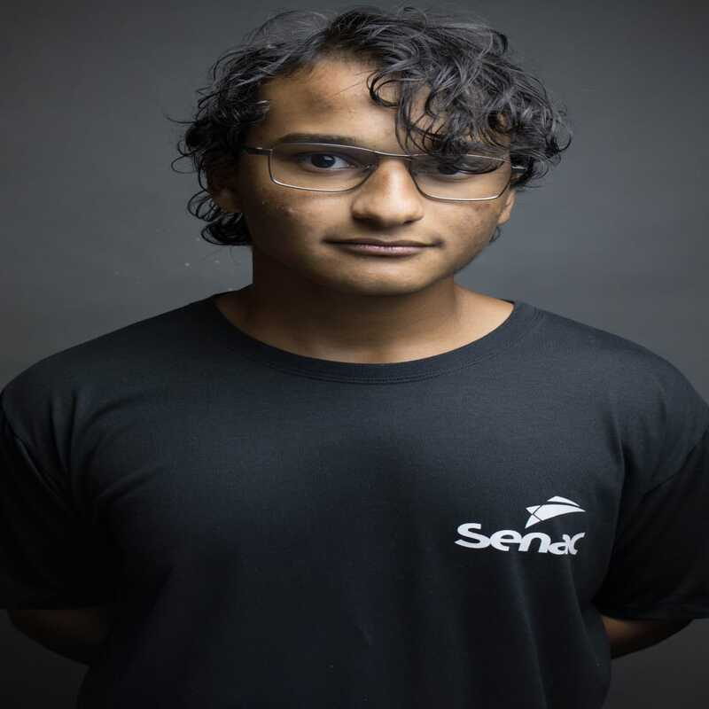
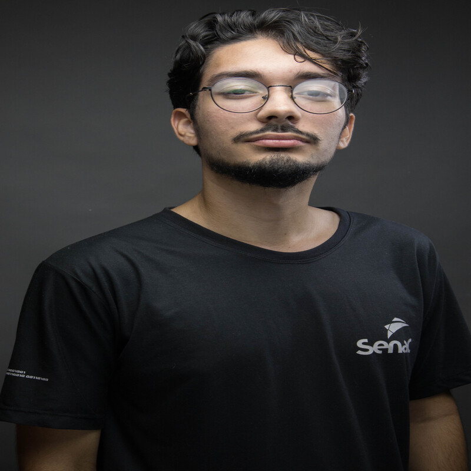
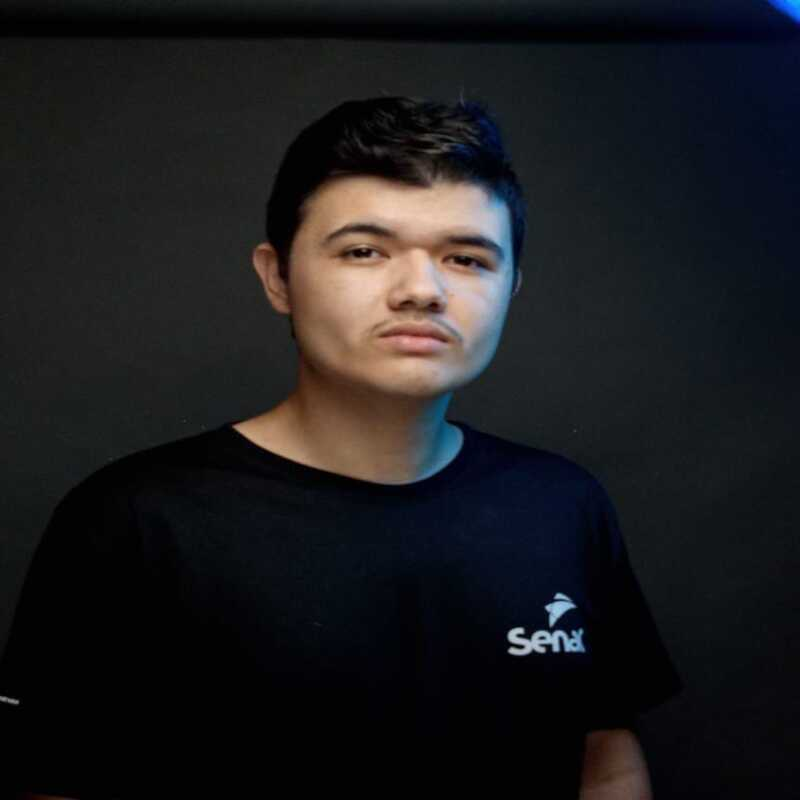

Sou aluno do Senac Registro, atualmente cursando o Técnico em Suporte e Manutenção em TI. Atuo como líder de um projeto voltado à infraestrutura de TI, com ênfase em virtualização e telefonia IP. Tenho especialidade na plataforma Issabel, sendo responsável pela configuração dos ramais e pela implementação de um servidor de virtualização utilizando o Proxmox. Nesse ambiente, centralizamos todos os servidores e serviços que sustentam o projeto. Estou sempre em busca de novos conhecimentos na área de redes, sistemas e soluções tecnológicas que promovam eficiência e inovação.
Iniciei meus estudos junto aos integrantes do grupo, pesquisando sobre PABX e telefonia IP. Aprender a lidar com softwares open source foi desafiador, ainda mais em um ambiente totalmente virtualizado. Com o tempo, descobri minha especialidade no projeto: o monitoramento. Utilizei ferramentas de código aberto para verificar o hardware do servidor Proxmox e das máquinas virtuais. Trabalhei com o InfluxDB, que coleta os dados, e o Grafana, que os exibe de forma visual e clara. Essa experiência foi desafiadora e muito valiosa para meu crescimento profissional.
Como estudante de TI, atuei como responsável técnico pela infraestrutura de redes no projeto integrador. Configurei o pfSense como roteador UTM, garantindo segurança, filtragem e alta disponibilidade. Um dos maiores desafios foi viabilizar comunicação VOIP entre LANs e VLANs, com foco em estabilidade e baixa latência. Também integrei o Tailscale ao pfSense como exit-node, permitindo roteamento seguro entre redes remotas. Essa experiência transformou teoria em prática e reforçou meu conhecimento em redes, segurança cibernética e conectividade distribuída.
Olá, me chamo Dionatan, tenho 19 anos e sou estudante do curso Técnico em Manutenção e Suporte em Informática pelo SENAC. Participo do projeto OpenVirtSolutions, focado em oferecer soluções open-source e gratuitas para pequenas empresas. Sou responsável pela configuração e gerenciamento do servidor de backups com o OpenMediaVault. No início, enfrentei desafios, mas aprendi com dedicação. O mais gratificante é ver minha evolução e a dos colegas. Tenho orgulho dessa jornada e da conquista que será nossa formatura. Sou tranquilo, gosto de música e de um energético nas horas vagas.